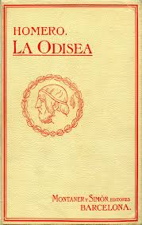
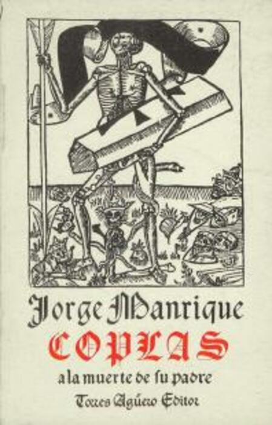
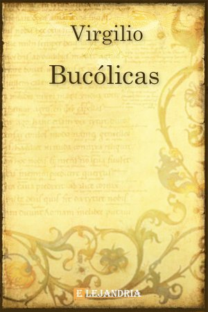

Seccion Poesia

La Odisea
El poema épico de aventuras por excelencia, narra el ingenioso y largo viaje de regreso a casa de Odiseo.

La Divina Comedia
Un monumental poema que narra el viaje de su autor por el Infierno, el Purgatorio y el Paraíso.

Coplas a la muerte de su padre
Una de las elegías más hermosas en español. Una serena meditación sobre la vida, la fama y la muerte.
Sonetos
Una colección de 154 sonetos que exploran el amor, la belleza, el paso del tiempo y la mortalidad.

Bucólicas
Colección de poemas pastorales que idealizan la vida en el campo como un refugio de paz y belleza.

Rubaiyat
Colección de cuartetas persas que reflexionan con hedonismo y escepticismo sobre el vino, el amor y la vida.